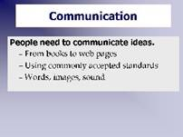

Communciation is Driving Force behind HTML
It is in our nature as humans to communicate with other people. The Web allows us to do this on a level previously unseen in human history.

[D]The reason HTML is so very cool is that it allows you to communicate with other people globally.Let's look back in time:
Before the printing press, only the people in power, such as royalty and clergy had books. The invention of the printing press changed all that, and slow but sure, information became available to many more people as literacy grew and printing became an industry.
Books (and all printed matter) are still a very important communication tools. The "paperless office" of the future doesn't look like it is going to happen. Why? Because people enjoy books. They like to hold them, flip the pages, and carry them around. It also seems as if our brains receive more information when we hold something as opposed to just looking at it on a computer screen.
However, books also have a few weaknesses:
- They are designed to be used by one person at a time.
- It is difficult to do a search
- They are expensive to publish and distribute
- Once printed they cannot be easily updated
What if you want to get information to more than one person? Or have do a quick search across a document?
That's where web pages step in. They are digital making them easy to distribute across a network. They are very easy to update, and you can search a large book in seconds. Just like books changed how people lived and thought, so is the Web changing how we live and think.
Books and web pages both use a written language. And all languages have rules or standards.
Be it English or Arabic there is a set of rules for the language so people can decipher what the words and sentences mean. The same is true of HTML. There are very specific rules called standards. However, instead of people using these rules to decipher the contents, HTML is to be read and interpreted by computer programs -- our web browser software.